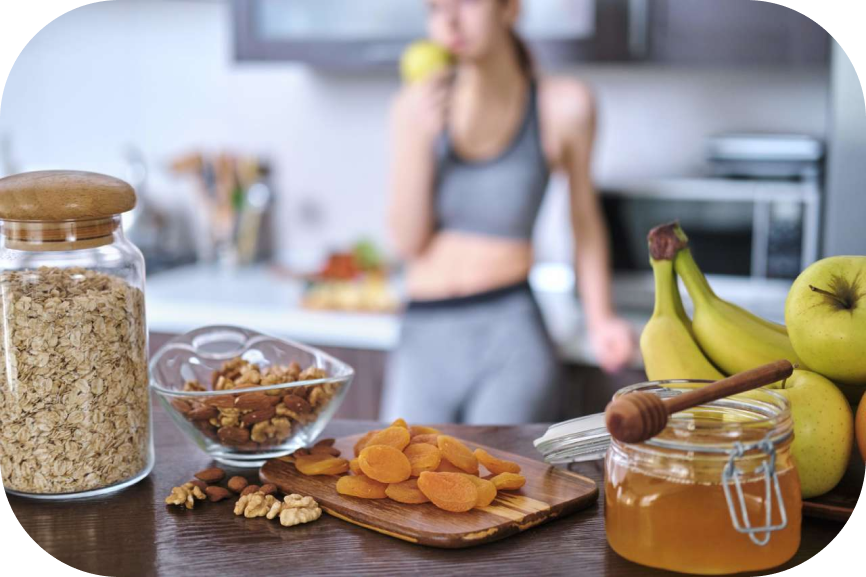
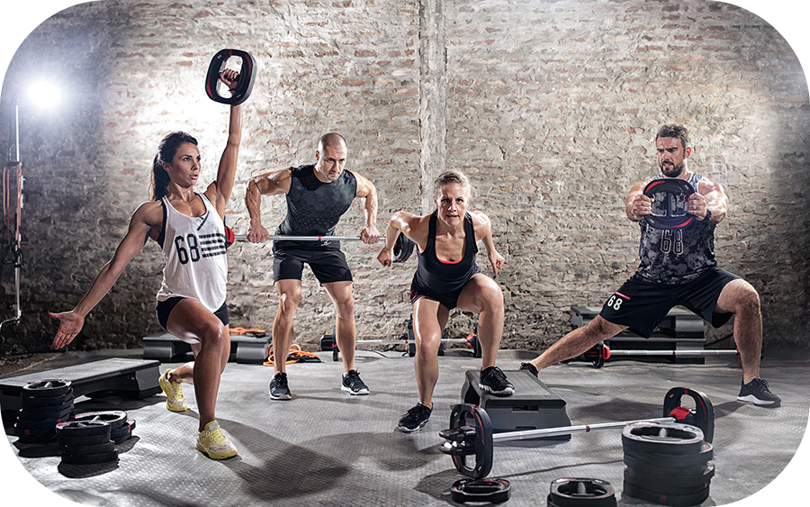

DIETA
Durante la fase di massa, ecco alcuni consigli molto brevi per impostare una dieta adeguata:
- Fonti proteiche: Include fonti proteiche di alta qualità come carne magra, pesce, uova, latticini, legumi e prodotti a base di soia.
- Carboidrati: Scegli carboidrati complessi come cereali integrali, patate dolci, legumi e verdure per fornire energia e nutrienti.
- Grassi sani: Opta per grassi sani come avocado, olio d'oliva, noci e semi per la salute generale e l'equilibrio ormonale.
Ricorda che ogni individuo ha esigenze e preferenze diverse, quindi adatta la dieta in base ai tuoi obiettivi, al tuo corpo e alle tue preferenze alimentari personali. Consulta un professionista della nutrizione per una pianificazione dietetica personalizzata.
ALLENAMENTO
Un adeguato programma di allenamento di sollevamento pesi e resistenza è cruciale per stimolare la crescita muscolare durante la fase di massa. Un programma ben strutturato assicura una stimolazione muscolare adeguata, utilizzando il principio del sovraccarico progressivo per aumentare gradualmente l'intensità degli allenamenti. Gli esercizi multiarticolari che coinvolgono più gruppi muscolari sono preferibili per massimizzare la stimolazione muscolare. Il riposo e il recupero sono essenziali per permettere ai muscoli di ripararsi e crescere. La consistenza nell'allenamento e la progressione graduale sono importanti per ottenere risultati. È consigliabile lavorare con un professionista del fitness per personalizzare il programma di allenamento in base alle tue esigenze.
